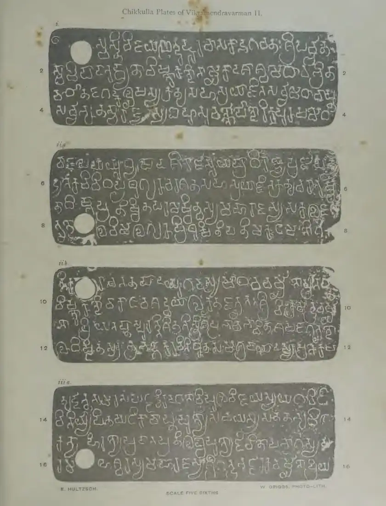

Chikkulla plates of Vikramēndravarman II
CHIKKULLA PLATES OF VIKRAMENDRAVARMAN II.
By F. KIELHORN, PH.D., LL.D., C.I.E. ; GÖTTINGEN.
According to Mr. J. Ramayya, Treasury Deputy Collector of the Vizagapatam district, these plates were found,2 some ten years ago, by one Pindi Nammayya of Upperagudem, a hamlet of Amalapuram in the Golugonda tâluka of the Vizagapatam district, while excavating earth at the Atikavani tank in the Chikkulla agrahâra of the Tuni division of the Gôdâvari
1 The red paint had to be frequently renewed because it was continually obliterated by the king's 'white' fame.
2 I take this information from a note on the inscription by Mr. J. Ramayya, a copy of which was sent to me by Dr. Hultzsch after he had received my manuscript of this article.
district. In the beginning of 1895 Nammayya's wife offered them for sale in the village of Amalapuram, when they were secured by the Karanam and forwarded to the Collector of Vizagapatam, who sent them on to Dr. Hultzsch at his request.
These are five copper-plates, each of which measures about broad by high, and of which the first and last plates are inscribed on one side only. The engraving on them is very deep, so that most of the letters show through distinctly on the blank sides of the first and fifth plates. The plates are strung on a copper ring, about thick and 3'' in diameter, which passes through a hole in the lower proper right corner of each plate. The ends of the ring are soldered into the lower part of a circular seal which measures in diameter and bears in relief on a slightly countersunk surface a well-executed lion, which stands to the proper right, raises the right fore-paw, opens the mouth, and apparently has a double tail. When the plates were received by Dr. Hultzsch, the soldering of one end of the ring had given way, so that the plates could be detached from the ring by simply bending it.—Although the plates have no raised margins, the writing on them nearly throughout is in an excellent state of preservation. The size of the letters is about . The characters belong to the southern class of alphabets. For the greater part they closely resemble those of the Gôdâvarî plates of the Râjâ Prîthivimûla, published with a photo-lithograph in the Journal Bo. As. Soc. Vol. XVI. p. 116 ff. They include signs of the final m, at the end of lines 28, 29 and 30, of the final l, in line 26, and of the numerical symbols1 for 5, 8 and 10, also in line 26. The language is Sanskrit, partly, as in lines 23-25 and 31-32, very incorrect, and mixed with Prâkît words, as in line 23 where we have gârava for gaurava, and in line 26 which gives the words pakka (properly pakkha) and gihma (properly gimha) for paksha and grîshma. That the writer's vernacular was Telugu, is proved by the ending of the word samvassarambul for samvatsarâh in line 26.2 Of Sanskrit words not found in the dictionaries our text offers buhusuvarna,3 l. 4, yûdhya (?), l. 5, and prâdhirâjya, l. 5, all denoting particular sacrifices. As regards orthography, it may be sufficient to note that final visarga is generally omitted, that final m is doubled4 before a vowel in Vishnukunçinâmm-êkâdas-, l. 2, and that the word Tryambaka is spelt Triyambhaka in line 22. The inscription is in prose, except that it ends with three benedictive and imprecatory verses.
The inscription is one of a Mahârâja Vikramêndravarman [II.], who was the eldest son of the Mahârâja Indrabhattârakavarman, grandson of Vikramêndravarman [I.], and great-grandson of the Mahârâja Mâdhavavarman, of the family of the Vishnukunçins. From his residence at Ìenduîûra, Vikramêndravarman, who meditated on the feet of the holy lord of Śriparvata, makes known by it that, on the 5th day of the 8th fortnight of the summer season of the 10th year of his reign, he gave the village of Rêgonîam, which was south-east of the village of Râvirêva on the bank of the Kṛishnabennâ, i.e. the river Kṛishnâ, in the Nat[ri?]patî district, to (the) Sômagirîsvaranâtha (temple) of Tryambaka (Šiva). Nothing further is said about the donor himself; of his ancestors, Mâdhavavarman is stated to have celebrated many sacrifices;5 Vikramêndravarman [I.] (through his mother) was connected with the Vâkâṭas; and Indrabhattârakavarman is eulogized for his warlike exploits.
The name Vishnukunçin has not, so far as I know, been met with in other epigraphical records. Considering the locality where these plates come from, as well as the facts that the
1 Special attention may be drawn to the symbol for 10, which here is like the subscript form of the letter m, and which clearly is a further developed form of the symbol for 10 as we have it in line 60 of the Chammak plates of the Vâkâṭaka Mahârâja Pravarasêna II.; Gupta Inscr. Plate xxxiv.
2 See p. 197, note 2.
3 This word is often met with in inscriptions.
4 Final m is doubled before a vowel also e.g. above, Vol. III. p. 146, l. 16; and similarly we find mm instead of final m, e.g. ibid. p. 132, l. 19, and Ind. Ant. Vol. XVIII. p. 145, l. 22.
5 See the description of the Vâkâṭaka Mahârâja Pravarasêna I., above, Vol. III. p. 260, which is very tame compared with what we have here. Mâdhavavarman is stated to have celebrated even purushamêdhas or human sacrifices.
writer's vernacular was Telugu and that the donor worshipped the lord of Śriparvata, which I take to be the sacred Śriśaila in the Karṇul district, I believe that the word survives in Vinukoṇda, the name of a hill-fort and town in the Kistna district, about 60 miles east of Śriśaila and 50 miles south of the river Krishṇā, and that this Vinukoṇda, which is reported to be a place of great antiquity, was really the capital of the Vishṇukunṇins.1 I also would identify the donor's father, Indrabhatṭārakavarman, with the Indrabhatṭāraka, to uproot whom, as we learn from lines 17-20 of the Gōdāvarī plates of the Rājā Prithivimūla, an alliance was formed by several chiefs, and whose elephant Kumuda was struck down by a certain Indrādhirāja, mounted on his own elephant Supratīka.2
The place ĵendulūra from which the donor's order was issued, is identified by Mr. Ramayya with the modern Deṇdalūru,3 the Dendaloor of the map, a village on the ruins of the city of Vēngī, about 5 miles north-east of ĵlūru (Ellore) in the Ellore tāluka of the Gōdāvarī district. The two villages mentioned in line 20 I am unable to identify. As regards the time of the inscription, both the circumstance that the date is referred to a fortnight of the summer season, and the employment of numerical symbols in line 26, tend to show4 that this record is not later than about the end of the 8th century A.D., while the whole style of the inscription appears to indicate that it cannot well be assigned to a much earlier period. This conclusion would well accord with the mention, in connection with the donor's grandfather, of the Vākāṭa (or Vākāṭaka) family, which in all probability flourished towards the end of the 7th and in the 8th century A.D.; and there is nothing in the palæography of the inscription that would militate against it.
TEXT.5
First Plate.
| 1 | Öm6 | svasti | [||*] | Vijaya-ĵendulūra-vāsakād=bhagavataĵ | Śriparvvata- |
| 2 | svāmi-pādānuddhyātō | 7Vishṇukunṇdināmm=êkādaś-āśvamēdh-āvabhrit-ā-8 |
1 Compare Mr. Sewell's Lists of Antiquities, Vol. I. p. 67. I believe that either Vinukoṇda, ' the sky-hill,' is a corruption of Vishṇukunṇda or the latter a Sanskritized form of the former. Mr. Sewell informs me that the Telugus explain the word Vinukoṇda as ' the hill of hearing,' because Rāma is believed to have heard there the news of Sitā's abduction.
2 Jour. Bo. As. Soc. Vol. XVI. p. 117. Dr. Fleet, who thought of identifying the Indrabhatṭāraka of Prithivimūla's inscription with the Eastern Chalukya of that name, the younger brother of Jayasimha I, has already stated that Kumuda is properly the elephant of the south-west or south, and Supratīka the elephant of the north-east. With reference to that remark it may be noted that our inscription particularly eulogizes Indrabhatṭārakavarman for the victories which he gained by means of his elephants over other chaturdanta elephants, and that chaturdanta is properly an epithet of Indra's elephant Airāvata, the elephant of the east.
3 See Mr. Sewell's Lists of Antiquities, Vol. I. pp. 34 and 36.
4 Of the four copper-plate inscriptions with season-dates hitherto discovered (the Hīrabadagalli plates of the Pallaya Śivaskandavarman, Ep. Ind. Vol. I. p. 5; the Dēvagere plates of the Kadamba Mrīgēśavarman, Ind. Ant. Vol. VII. p. 37; the Halśī plates of the reign of the Kadamba Ravivarman, ibid. Vol. VI. p. 28; and the Dudia plates of the Vākāṭaka Pravarasēna II., above, Vol. III. p. 260) the latest, that of the Vākāṭaka Pravarasēna II., has with great probability been referred to about the beginning of the 8th century A.D.—The latest known copper-plate inscriptions with numerical symbols, the time of which can be fixed with certainty, are all anterior to A.D. 800. So far as I know, they are the Nausārī plates of the Gujarāt Chalukya Pulakēśirāja of [Chēdi-]Samvat 490= A.D. 738, Vienna Oriental Congress, Arian Section, p. 230; the Āntrōli-Chhārōli plates of the Rāshṭrakūṭa king Kakka of Gujarāt of Śaka-Samvat 679=A.D. 757, Jour. Bo. As. Soc. Vol. XVI. p. 106; the Alinā plates of Śilāditya [VII.] Dhrābhata of [Valabhī-]Samvat 447=A.D. 766-67, Gupta Inscr. p. 173; and the Bengal As. Soc.'s plate of the Mahārāja Vināyakapāla of [Harsha-]Samvat 188=A.D. 794 (?), Ind. Ant. Vol. XV. p. 140.
5 From impressions supplied by Dr. Hultzsch.
6 Expressed by a symbol. 7 Read 8kuṇdinām=.
8 Read -avabhrith-d-; the word avabhritha is frequently written avabhrita in inscriptions; compare, e.g. Ind. Ant. Vol. VII. p. 16, l. 5; p. 186, l. 4; p. 211, l. 9; and Vol. XIX. p. 17, l. 5.
| 3 | vadhauta-jagadka(tka)lmashasya | kratu-sahasra-yâjina[h*] | sarvvamêdh-âvâpta |
| 4 | sarvvabhûta-svârâjyasya | bahusuvarṇṇa-paunđarîka-purushamêdha |
Second Plate; First Side.
| 5 | vâjapêya-yûdhya1(?)-shôđaśi-râjasûya-p r â d h i r â j y a - p r [ â * ] j â p a t y - â - | |
| 6 | dy-anêka-vividha-prîthu-guru-vara2-šata-sahasra-yâjina[h*] | kratuvar-ânushthâ |
| 7 | 3tâdhishthâ-pratishthita-paramêshthitvasya | mahârâjyasya sakala-jaga |
| 8 | nmaṇđala-vimala-guru-pri(pri)t h u - k s h i t i p a t i4 - m a k u t ā - m a ṇ i - g a [ṇa]- |
Second Plate; Second Side.
| 9 | [n]ikar-âvanata-pâdayugałasya | Mâdhavavarmmaṇa[h*] | pranaptâ |
| 10 | Vishṇukuṇđi-Vâkâṭa-vamša-dvay-âlamkrita-janmanah | śrî-Vikramêndravarmma- | |
| 11 | ṇa[h*] priya-naptâ | spu(sphu)ran-niśita-nistrimša-prabh-âvabhâvi(si)t-âsêsha- | |
| jaganmaṇđa- | |||
| 12 | l-âdhishti(shthi)tasya | bhr[û]bhaṅgakara-vinirdhûta-samagra-dâyâdasya5 | anêka-cha- |
Third Plate; First Side.
| 13 | turddanta-samara-samghatṭta-dvirada-gaṇa-vipula-vijayasya | yathâvidhi- |
| 14 | viniryâpita-ghaṭik-âvâpta-puṇya-samchayasya | satata-bh[û]mi-gô- |
| 15 | kanyâ-hiraṇya-pradâna-pratilabdhâ-puṇya-jîvit-ôpabhôgasya | pa- |
| 16 | rama[mâ*]hêsvarasya mahâr[â*]jasya | 6śrî-Indrabhatṭârakavarmmaṇa[h*] priya- |
Third Plate; Second Side.
| 17. | [jyê]shṭha-putrô garishta(shṭhah) śaiśava êva sakala-nṛipaguṇ-âlamkrita- |
| 18 | sya7 samyag-adhy[â*]rôpita-sakala-râjyabhâra[h*] paramamâhêsvarô |
| 19 | mahârâja[h*] śri(śrî)mân=Vikramêndravarmmâ8 êvam=âjñâpayati [|*] Nat[pri?]paṭyâm Krî- |
| 20 | shṇabe[nnâ]9-taṭê Râvirêva-gr[â*]masya dakshiṇa-pûrvvasyâm diśi Rêgo- |
Fourth Plate; First Side.
| 21 | nṇran=nâma grâma[h*] sakala-jaga[t*]traya-nâthasya śiśuśaśi-kar-âvadâ- |
| 22 | ta-śubhrîkrita-jaṭâmakuṭasya10 bhagavatas=Triyambha(mba)kasya bhavatê |
| 23 | Sômagirêsvarânâthâya11 dattarn(ttah) [||*] Râjñâ12 vachanâd=gâravêṇ=âjñâ[m] k[â]- |
| 24 | rayiti [|*] Kaśchid=ênam=pâlâyati sô Rudra-lôkê dêva-gaṇâ(ṇa)13- |
1 Yûdhya is no word, and yûthya or yâpya would yield no satisfactory meaning.
2 Before vara one misses a word like yajña or kratu.
3 Read n-âdhishthita-pratishthita-, or only na-pratishthita-.
4 Originally kshitipiti and mâṇi was engraved.
5 Read °dasy=ânêka-.
6 Read śr-Îndra°.
7 This akshara may have been struck out in the original; read °kritah samyag-.
8 Read °varmm=aivam=.
9 This is what seems to have been originally engraved; but the akshara in brackets looks as if it had been altered. In Ind. Ant. Vol. IX. p. 103, l. 7, the name of the river is spelt Krishṇabeṇṇâ, and this probably is intended here. See also above, Vol. III. p. 95.
10 Originally ⁹łasya was engraved.
11 Read Sômagirłevarandthâya.
12 The Sanskrit words which the writer is thinking of, apparently are rdjñû vachanasya gauravêṇ=âjñâm kârayêta (for kuryâta or kuruta); compare above, Vol. III. p. 262, l. 23, kârayita for kârayêt. The commencement of the next sentence would properly be yah kaśchid=ênâm pâlayati sa.
13 This correction may have been made in the original already.
Plate 1 is bound after this page.
Fourth Plate; Second Side.
| 25 | kôtí-sa(śa)ta-sahasrêṇa | svarggina1 | sukha[m] | môdati | [||*] | Vi[ja]- | ||
| 26 | yarâjya-samvassarambu!2 | 10 | mása-pakkam | 8 | gihmâ | 5 | [||*] | |
| 27 | 3Bahubhir=vvasudhâ | datt[â] | bahubhiś=ch=ânupâlitâ | [*] | yasya | |||
| 28 | yasya | yadâ | bhâmiin(mis=) | tasya | tasya | tadâ | phalam | [||*] |
Fifth Plate.
| 29 | Sva-datt[â*]m | para-datt[â*]m | vâ | yô | harêti(ta) | vasundharâm | [*] | |
| 30 | shashtin | varsha-sahasrâpi | narakê | pachyatê | dhruvam | [||*] | ||
| 31 | Gâvô4 | bhumi | tathâ | bhâryyâ | akramya | hara | mâ nayâ | [*] |
| 32 | srâvayanti | râjânâm | brahmahatyâ | cha | lipyati | || |
TRANSLATION.
(Line 1.) Ôm ! Hail ! From his residence, the victorious Lendulûra, he who meditates on the feet of the holy lord of Śrîparvata5 (and belongs to the family) of the Vishṇukunḍins,6— the great-grandson of the Mahârâja Mâdhavavarman who washed off the stains of the world by his ablutions after eleven aśvamédha sacrifices, who celebrated thousands of sacrifices, who by a sarvamédha sacrifice obtained the supreme dominion over all beings, who celebrated a hundred thousand bahusuvarṇa, paunṭarîka, purushamédha, vâjapêya, yûdhya (?), shôṭaśin, râjasûya, prâdhirâjya, prâjâpatya and various other large and important excellent [sacrifices], who by the celebration of excellent sacrifices attained to firmly established supremacy, (and) whose two feet were bent down by multitudes of heaps of jewels from the diadems of the stainless, noble and great kings of the whole orb of the earth,— the dear grandson of the glorious Vikramêndravarman whose birth was embellished by the two families of the Vishṇukunḍins and Vâkâṭas,— the dear eldest son of the devout worshipper of Mahêsvara (Śiva), the Mahârâja, the glorious Indrabhatṭârakavarman, who presided over the whole orb of the earth which was illuminated by the radiance of his flashing sharp sword, who by the act of contracting his eyebrows scattered all claimants, who gained extensive victories when his troups of elephants encountered in battle numerous four-tusked elephants,7 who acquired a store of merit
1 The sense intended is that of svargiṇâm sukham=anubhavati.
2 I owe the right reading of this to Dr. Fleet, who, when communicating it to me, also drew my attention to the Telugu Nom. Plur. varshamulu, 'the years,' in line 6 of the Anamkoṇ inscription of the Mahâmandalêsvara Rudradêva of the Kâkatîya dynasty of Śaka-Sañvat 1084, Ind. Ant. Vol. XI. p. 12. Since then I have myself found samvatsaramulu in line 27 of the Telugu inscription of Sômêsvara of Śaka-Sañvat 1130 (for 1131), above, Vol. III. p. 316; varshambulu above, pp. 46 and 92, and in a copper-plate inscription in Telugu characters of Śaka-Sañvat 1586 (?), Ep. Carn. Vol. I. p. 19, No. 12; and varushambulu in another copper-plate inscription of Śaka-Sañvat 1155 (?), ibid. p. 104, No. 86.—In what follows the word mása is quite meaningless; and the whole passage containing the date, expressed in Sanskrit, should be -samvatsarê 10 grishma-pakshê 8 [divasê*] 5; compare above, Vol. III. p. 262, l. 28.
3 Metre: Ślôka (Anushṭubh); and of the following verses.
4 I have not found this verse elsewhere, and am unable to give the correct text of it.
5 Compare with this the commencement of the copper-plate inscription of the Mahârâja Vijayanandivarman, Ind. Ant. Vol. V. p. 176, l. 1, vijaya-Vêngtpurâd=bhagavach-Chitrarathasvâni-pâdânuddhyâtô.
6 The Genitive case Vishṇukunḍindm cannot well depend on the word mahârâjah in line 19, but is apparently meant to express that the princes who will be spoken of in the sequel, all belong to the family of the Vishṇukunḍins, —a usage of the Genitive which I formerly doubted. We may compare the Genitive Kadambânâm in line 4 of the Dêvagere plates of the Mahârâja Mṛigêśavarman, and in line 5 of the Halśi plates of the king Ravivarman, Ind. Ant. Vol. VII. p. 35, and Vol. VI. p. 26, and now, since the original reading of the introductory passage of the Valabhî plates has been discovered by Dr. Hultzsch, above, Vol. III. p. 319, also the Genitive Maitrakâṇâm of those plates.
7 The compound, so translated here, cannot be properly dissolved.
by emptying1 water-jars (at donations made) according to precept, who found a meritorious enjoyment of life in constantly bestowing land, cows, and gold, and giving girls in marriage,2—the devout worshipper of Mahèsvara (Šiva), the Mahárája, the glorious Vikramèndravarman, the most noble, who, in childhood already embellished with all the virtues of a king, has duly taken upon himself the whole burden of government, thus issues his commands :—
(L. 19.) The village named Régonřam, in Nat[ri ?]patì on the bank of the Křishnabennâ, in a south-eastern direction of the village of Râvirèva, has been given to the Sômagirišvara-nâtha (temple), belonging to the holy Tryambaka (Šiva), the lord of all the three worlds, whose crown of matted hair is whitened and rendered bright by the rays of the young moon. Out of respect for the king's word you should execute (this) command. Whoever obeys it, enjoys the happiness of the inhabitants of heaven with the hundred-thousand billions of divine hosts in Rudra's world.
(L. 25.) In the year 10 of the reign of victory, on the 5th (day) of the 8th fortnight of summer.
[Here follow three benedictive and imprecatory verses.]
1 I find no authority for thus translating viniryâpîta, but cannot suggest any other meaning for the original passage.
2 Compare, e.g., the Nâsik inscription of Ushavadâta, who gave wives to eight Brâhmaṇas at the holy ttrtha of Prabhâsa; Archæol. Survey of Western India, Vol. IV. p. 99.
